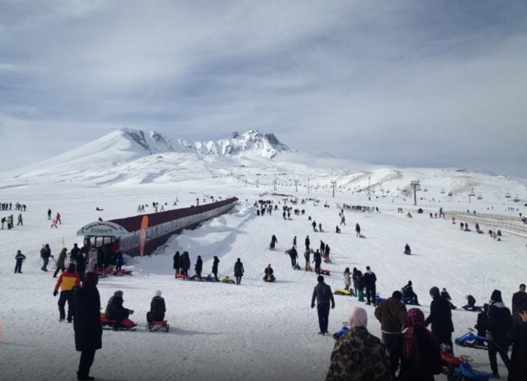
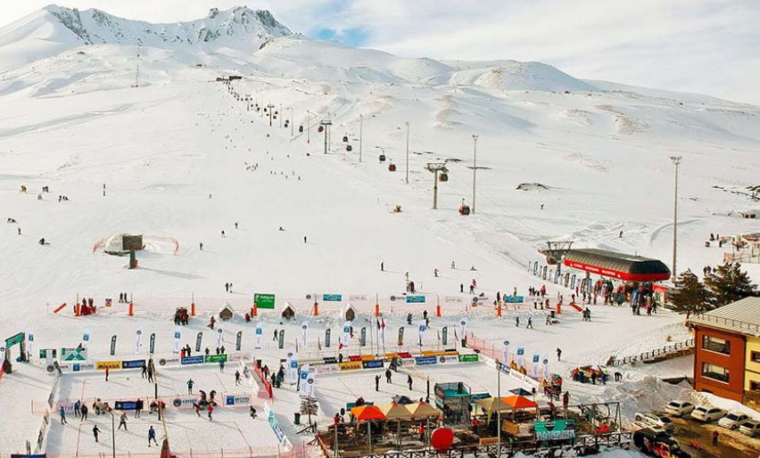

ERCİYES KAYAK MERKEZİ

Erciyes Kayak Merkezi, 3917 m yüksekliği olan Erciyes Dağı’na kurulan bir kayak merkezidir. Bölgenin iklimi karasal iklim özelliklerini taşımaktadır. Burada kar kalınlığı 50-100 cm arasını bulmaktadır. Bölgede günü birlik olarak ve ücretsiz şekilde kullanılabilecek 2000 kişi kapasiteli piknik alanları bulunmaktadır. Yaz ve kış aylarında ailece seyahat edilebilecek ve güzel vakit geçirebileceğiniz nezih bir ortamdır.
Erciyes Kayak Merkezine Ne Zaman Gidilir?
Kayak keyfini çıkarmak için kayak zamanlarına dikkat etmekte fayda vardır. Kayak sezonu için en uygun olan zamanlarda gitmek gerekir. Kayak yapabilmek için en uygun olan zaman Aralık-Nisan aylarıdır. 15 Kasım-1 Mayıs arası kayak sezonudur. Bu tarihlerde Erciyes Kayak Merkezi’ne kayak yapmak için gidilebilir.
Erciyes Kayak Merkezi Pistleri
Pistlerin eğimi %10 ile %50 arasında değişkenlik göstermektedir. Pistlerin renklerine göre kayak yapmanın zorluğu değişmektedir. Mavi renkli pistlerde orta derecede kayak yapan kişiler daha rahat ederler. Minimum %15, maksimum %35 eğimlidir. En düşük pist genişliği 30 m. kadardır. Mavi pist içerisinde belli yerlerde kırmızı ve yeşil renkli noktalara rastlanılabilir. Bu kısımlar, genel ortalama eğimleri etkilemektedir. Kırmızı renkli pistler iyi derecede kayak yapanlar için ayrılmıştır. Siyah renkli pistler ise en zor dereceli pistlerdir.
Erciyes Kayak Merkezi Nasıl Gidilir ?
Erciyes Turizm Merkezi, Kayseri Erkilet Havalimanına yalnızca 25 km uzaklıkta bulunmaktadır. Dilerseniz taksi vasıtasıyla havalimanından kayak merkezine kolaylıkla ulaşım sağlayabilirsiniz. Ayrıca şehir merkezinden de düzenli aralıklarla Erciyes Kayak Merkezi’ne Erciyes minibüsleriyle seferler yapılmaktadır. Kış aylarında Kayseri Büyükşehir Belediyesi’nin yoğun çalışmaları ile birlikte Kayseri-Erciyes karayolu 24 saat açık tutulmaktadır. Kayseri’nin konumuna bakacak olursak Anadolu’nun ortasında bulunmaktadır ve Kapadokya’ya yalnızca 70 km uzaklıkta bulunmaktadır. Kayseri’den İstanbul’a günlük 11 adet tarifeli uçuşlar vardır. Ayrıca Kayseri-İzmir ve Kayseri-Ankara arasında da birçok uçak seferi bulunmaktadır.